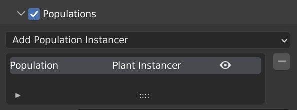
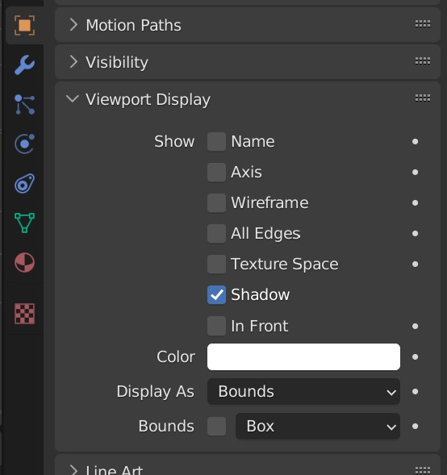
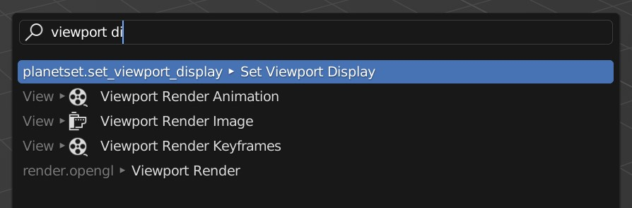
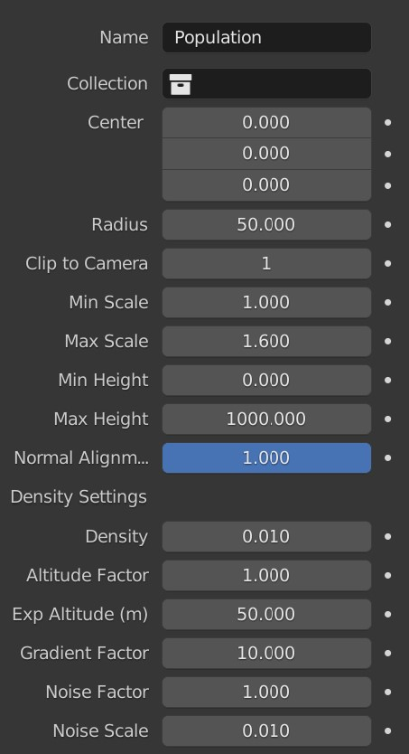
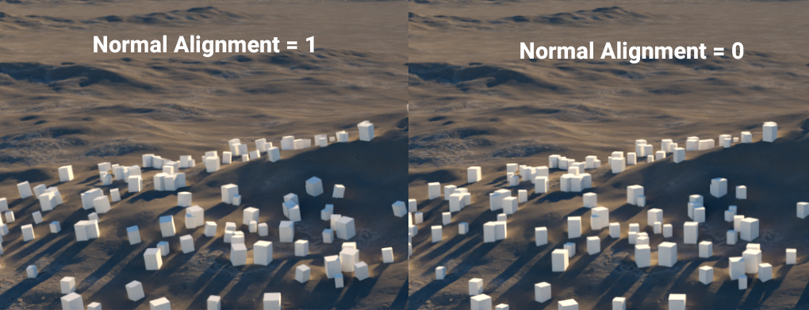
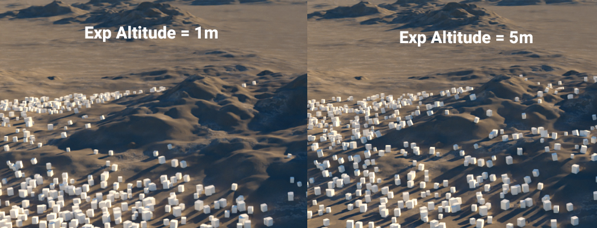
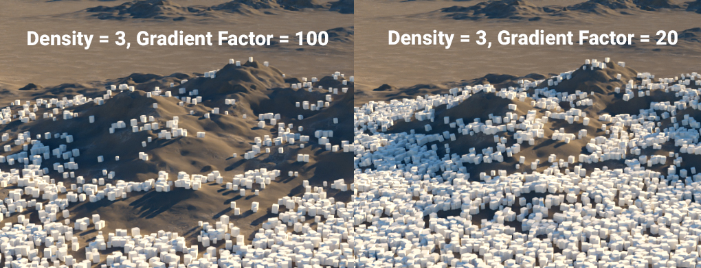
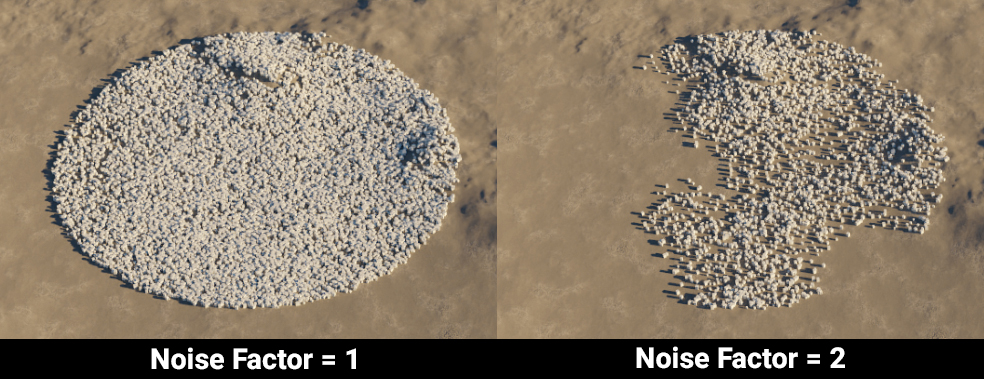

Populations
Instancers can be used to automatically place many of the same objects in the scene. Instancers are called populations in PlanetSet and can be used via the populations sub panel. To add a population, use the Add Population Instancer menu.

Tip
It is reccommended to set the viewport display mode to a low quality representation such as bounds for objects that will be instanced. You can set the viewport display mode for many selected objects all at once using the Set Viewport Display operator.
 
Enable all populations by checking the populations panel header.
Plant Instancer

Settings
Collection
The collection used to randomly select objects from to instance.
Center
The position of the population.
Radius
The range of the population.
Clip to Camera
If true, will not instance on any surface outside the camera view frustum.
Min Scale
Minimum random scale factor.
Max Scale
Maximum random scale factor.
Min Height
Instances won't appear below this height (in meters).
Max Height
Instances won't appear above this height (in meters).
Normal Alignment
Controls how much the instances should align to the surface normal.

Density
The overall surface density of the instances.
Altitude Factor
How much influence altitude decay has on the density.
Exp Altitude
The height in which the density decays to 36.7% its original density.

Gradient Factor
How much influence the surface steepness has on the density.

Noise Factor
How much influence the noise modulation has on the density.

Noise Scale
The size of the noise features.